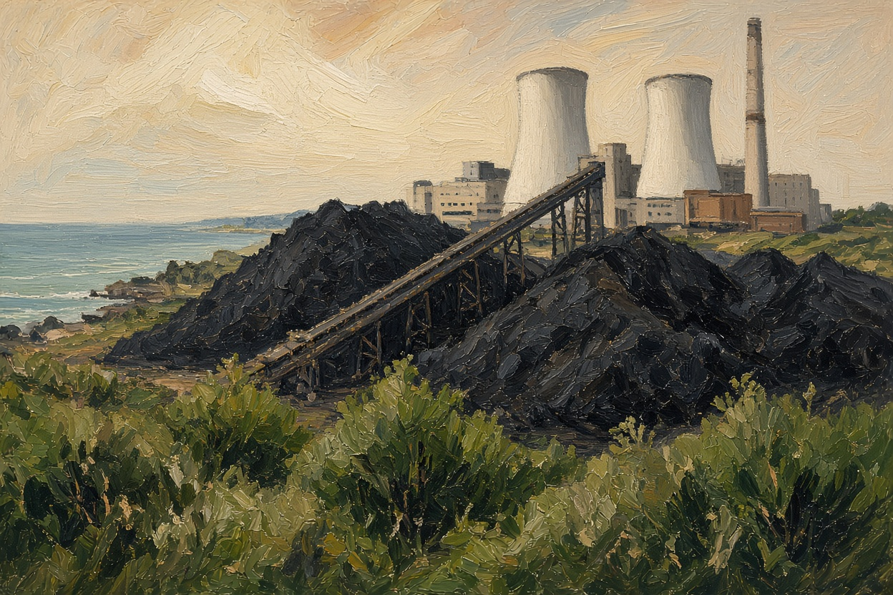

How we use coal Coal as a fuel למה משמש הפחם הפחם כחומר דלק
By the end of this page, name ways people use coal. By the end of this page, name the main uses of coal as a fuel. בסוף העמוד תוכלו למנות שימושים של הפחם. בסוף העמוד תוכלו למנות את השימושים העיקריים של הפחם כדלק.
For many years, coal was the main fuel for trains, ships, and factories. Until about fifty years ago, coal was the main fuel for moving trains and ships and for running factories. שנים רבות היה הפחם הדלק העיקרי לרכבות, לאוניות ולבתי חרושת. במשך שנים רבות, עד לפני כחמישים שנה, היה הפחם הדלק העיקרי של רכבות, אוניות ובתי חרושת.
Coal is not found in every country. Where there is a lot of coal, people also burn it at home, to cook and to keep warm. Coal is not found in every part of the world. In countries that have plenty of it, people use coal for transport and industry, and also at home for heating and cooking. פחם לא נמצא בכל ארץ. איפה שיש הרבה פחם, שורפים אותו גם בבית לבישול ולחימום. הפחם אינו נמצא בכל מקום בעולם. בארצות שיש בהן פחם בשפע משתמשים בו גם בתחבורה ובתעשייה, וגם בבית לחימום ולבישול.
Burning coal makes a lot of heat. Coal is also dirty. It makes smoke and soot, and it leaves a lot of ash. Coal gives off a great deal of heat when it burns. Its fault is that it is dirty: the fire makes smoke and soot, and a lot of ash is left behind. כשפחם נשרף הוא נותן הרבה חום. אבל הוא מלכלך: יש עשן, פיח והרבה אפר. הפחם נותן חום רב כשהוא בוער. החיסרון הוא שהוא מלכלך. השריפה מביאה עשן ופיח, ונשאר אחריה אפר רב.
Our land has almost no coal under the ground. We buy the coal we need from other countries. Most of it is used in power stations, which make electricity. There is almost no coal deep in the ground of our country. We buy the coal we need from other countries. Its main use is in power stations, which produce electricity. בארץ כמעט אין פחם עמוק באדמה. קונים את הפחם מארצות אחרות. בעיקר משתמשים בו בתחנות כוח, שעושות חשמל. בארצנו כמעט אין פחם במעמקי האדמה. את הפחם שדרוש לנו קונים מארצות אחרות. השימוש העיקרי בו הוא בתחנות כוח, שמפיקות חשמל.
